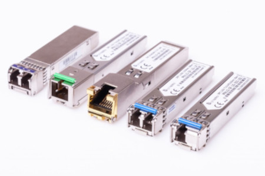

Treinamento de Fibra
Assunto a ser estudado
- Tipos de conectores
- Tipos de Gbic
- Atenuações de splitters
- Tipos de Cabos
Tipos de conectores
Os conectores SC/APC e SC/UPC são conectores de fibra óptica que possuem algumas vantagens em comum, como a montagem rápida e simples, e a possibilidade de serem reutilizados. No entanto, os conectores APC e UPC apresentam diferenças quanto ao polimento da fibra, à cor e ao desempenho: Polimento: Os conectores APC têm a extremidade da fibra polida em um ângulo de 8 graus, enquanto os conectores UPC são polidos sem ângulo. Cor: Os conectores APC são verdes, enquanto os conectores UPC são azuis. Desempenho: Os conectores APC têm um desempenho melhor do que os UPC, pois apresentam uma menor perda de retorno. A perda de retorno dos conectores UPC é de cerca de -50 dB, enquanto os conectores APC perdem cerca de -60 dB. Custo: Os conectores UPC são mais baratos do que os APC. A escolha entre o conector APC ou UPC depende da aplicação. Para aplicações que exijam mais estabilidade, recomenda-se o conector APC. Para aplicações menos sensíveis, pode-se usar o conector UPC.

O que pode e o que não pode ser feito

Modulo SFP - Gbic
Os GBICs (Gigabit Interface Converter) são transceptores que podem ser classificados por diferentes tipos, de acordo com a distância que podem alcançar: SX: Para distâncias de até 550 m, com comprimento de onda de 850 nm LX: Para distâncias de até 10 km, com comprimento de onda de 1310 nm EX: Para distâncias de até 40 km, com comprimento de onda de 1310 nm ZX: Para distâncias de até 80 km, com comprimento de onda de 1550 nm EZX: Para distâncias de até 120 km, com comprimento de onda de 1550 nm Os GBICs são usados em dispositivos de rede, como roteadores e switches, para conectar redes locais a redes de longa distância. Eles são caracterizados por: Formatos padronizados, o que permite trocá-los sem reconfigurar ou substituir hardware Compatibilidade com diferentes tipos de mídias, como cabos de cobre ou fibra óptica Velocidades variadas, como 1 Gbps (Gigabit por segundo) Capacidade hot-swappable, que permite instalá-los ou substituí-los sem desligar o dispositivo Conectores específicos para o tipo de mídia que estão projetados para conectar
SFP Simplex e Duplex
Tabela de potência e Atenuações

Identificação e nomeclatura dos cabo Fibra óptica

Grupos e quantidade de fibras por Cabo óptico


Topologia de Rede Desbalançeada

Topologia rede Balançeada